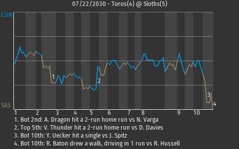

| PRO BASEBALL EXPERIENCE CANCUN TOROS AT SAN ANTONIO SLOTHS 07/22/2030 |  | |
| |
|
 | | PRO BASEBALL EXPERIENCE | | CANCUN TOROS AT SAN ANTONIO SLOTHS | | GAME ID: 243 - MONDAY, JULY 22ND, 2030 - GAME LOG | | | 1 | 2 | 3 | 4 | 5 | 6 | 7 | 8 | 9 | 10 | R | H | E |
|---|
| Cancun Toros (15-34) | 1 | 0 | 1 | 0 | 2 | 0 | 0 | 0 | 0 | 0 | 4 | 9 | 0 | | San Antonio Sloths (20-30) | 0 | 3 | 0 | 1 | 0 | 0 | 0 | 0 | 0 | 1 | 5 | 11 | 0 |
|
|  |
|
| Sloths Win 5-4 Walk-Off | In a close game at The Treehouse, the San Antonio Sloths edged the Cancun Toros, 5-4. San Antonio designated hitter Laddy McBantershire earned the nod as player of the game. He was 1 for 3 with a home run and 2 walks, while scoring 2 times. San Antonio is now 20-30.
The clutch at-bat came in the bottom of the tenth inning, when San Antonio second baseman Roger Baton, facing Rawk Hussell, had a run-scoring walk. It gave the Sloths the 5-4 win.
"Nice to see our side come away with the win," McBantershire said after the game.
|
| |  |
|
|
| CANCUN BATTING LINESCORE | | SAN ANTONIO BATTING LINESCORE |
|---|
|
BATTING
Doubles: D. Steele (12, 3rd Inning off A. Pooper, 0 on, 0 outs)
Home Runs: V. Thunder (13, 5th Inning off D. Davies, 1 on, 2 outs)
Total Bases: K. Webster , B. Cooper 2 , D. Steele 3 , S. Swing 2 , V. Thunder 5
2-out RBI: , V. Thunder 2
Runners left in scoring position, 2 outs: I. Fulmen , D. Steele
Sac Fly: Z. Coffey
Team LOB: 10
FIELDING
Double Plays: 1 (Asipi Jr-Steele-Coffey) |
| | BATTING
Doubles: J. O'Sullivan (13, 5th Inning off N. Varga, 0 on, 0 outs)
Home Runs: A. Dragon (9, 2nd Inning off N. Varga, 1 on, 2 outs) Y. Uecker (8, 2nd Inning off N. Varga, 0 on, 0 outs) L. McBantershire (5, 4th Inning off N. Varga, 0 on, 0 outs)
Total Bases: N. Wilson , A. Dragon 5 , P. Kelley , Y. Uecker 6 , L. McBantershire 4 , J. O'Sullivan 3 , R. Baton
2-out RBI: A. Dragon
Runners left in scoring position, 2 outs: S. Hans , Y. Uecker , R. Baton
GIDP: P. Kelley
Team LOB: 9 |
|
|
|
| CANCUN PITCHING LINESCORE | | SAN ANTONIO PITCHING LINESCORE |
|---|
|
PITCHING
Game Score: N. Varga 43
Batters Faced: N. Varga 29, D. Tarbington 5, Y. Pu'ar 5, J. Spitz 4, R. Hussell 2
Ground Outs - Fly Outs: N. Varga 9-4, D. Tarbington 1-1, Y. Pu'ar 1-2, J. Spitz 0-1, R. Hussell 0-0
Pitches - Strikes: N. Varga 111-70, D. Tarbington 22-14, Y. Pu'ar 23-14, J. Spitz 19-9, R. Hussell 10-4
Inherited Runners - Scored: Y. Pu'ar 1-0 , J. Spitz 1-0 , R. Hussell 3-1
|
| | PITCHING
Game Score: A. Pooper 49
Batters Faced: A. Pooper 21, D. Davies 6, C. Brother 4, B. Lobster 8, D. Washington 6
Ground Outs - Fly Outs: A. Pooper 3-2, D. Davies 0-3, C. Brother 1-1, B. Lobster 0-3, D. Washington 2-0
Pitches - Strikes: A. Pooper 99-62, D. Davies 18-13, C. Brother 25-14, B. Lobster 29-14, D. Washington 21-18
Inherited Runners - Scored: D. Davies 1-1 , D. Washington 1-0
|
|
|
|
| GAME NOTES |
Player of the Game: Laddy McBantershire
Ballpark: The Treehouse
Weather: Partly Cloudy (73 degrees), wind blowing in from left at 8 mph
Start Time: 7:05 PM EST
Time: 4:23
Attendance: 37476 |
 |